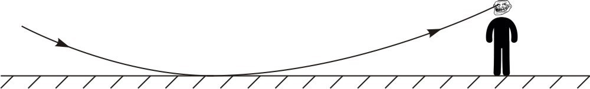

X17 (2017) — English translation
On a hot summer day, when the air warmed up to $t_1=35~^{\circ}\mathrm C$, the temperature of the asphalt in the sun and the thin layer of air above it was $t_2=65~^{\circ}\mathrm C$. When walking along the highway in such dry weather, “puddles” are often visible on the road. The refractive index of air depends linearly on air density: $n=1+k\rho$. At $t_0=0~^{\circ}\mathrm C$, $n_0=1{.}000292$. Consider that a person's height is $H=1{.}8~\text{м}$.

Source: https://pho.rs/p/3942